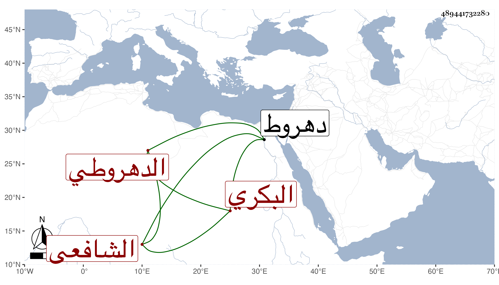

0902Sakhawi.DawLamic.ITO20230111-ara1.EIS1600.489441732280
Biography ID: 489441732280
252
أحمد بن محمد بن أحمد بن محمد بن أحمد بن محمد بن عوض بن عبد الخالق الزين أبو العباس بن ناصر الدين البكري الدهروطي الشافعي جد الجلال محمد ابن عبد الرحمن الآتي . ولد في سنة خمس وأربعين وسبعمائة بدهروط وأخذ عن أبيه وعنه ابنه عبد الرحمن بل وحفيده الجلال واختصر الروضة مع مزيد كثير في مجلد سماه عمدة المفيد وتذكرة المستفيد وله أيضا الرابح في علم الفرائض . ومات في المحرم سنة تسع عشرة بعد أن أثكل ابنه . أفادنيه حفيده .
